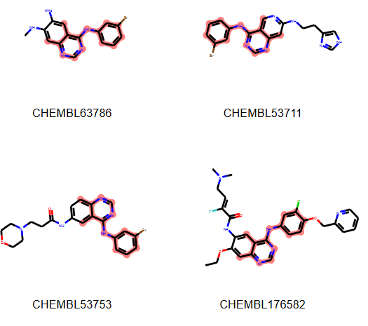
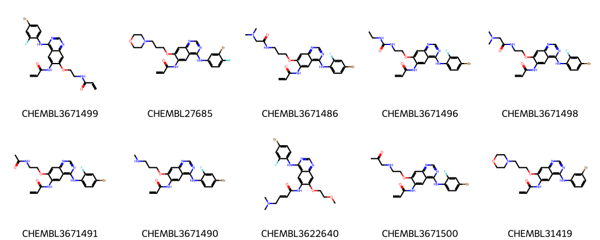
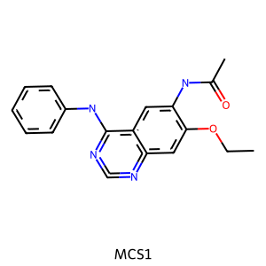
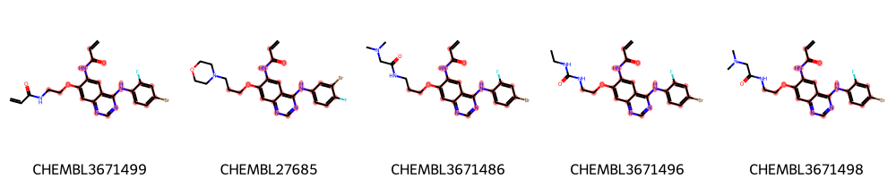
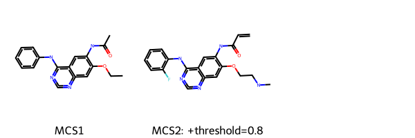
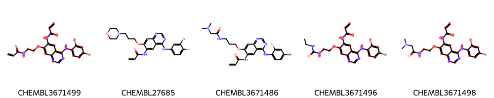
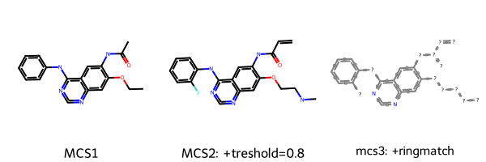
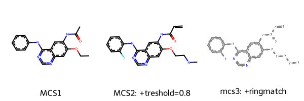
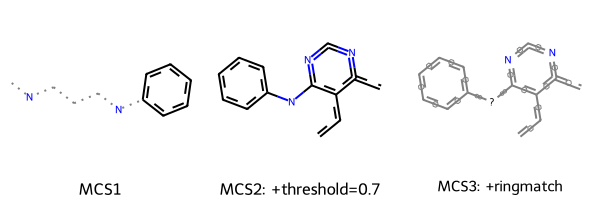

T006 ·最大公共子结构¶
本次讲座的目的¶
大规模化学数据的聚类和分类对于药物发现中各种化学应用领域的导航、分析和知识发现至关重要。
在上一篇文章中，我们学习了如何对分子进行分组（聚类），发现一个簇中的分子看起来彼此相似，并且共享一个共同的支架。除了目视检查，我们还将在这里学习如何计算一组分子共有的最大子结构。
理论内容¶
一组分子中最大公共子结构的鉴定简介
FMCS 算法详解
实战内容¶
加载和绘制分子
使用不同的输入参数运行 FMCS 算法
更多样化的集合：从 ChEMBL 下载的 EGFR 化合物
使用交互式临界自适应识别 MCS
参考文献¶
Dalke A, Hastings J., FMCS: a novel algorithm for the multiple MCS problem. J. Cheminf. 2013; 5 (Suppl 1): O6
Raymond JW., Willet P., Maximum common subgraph isomorphism algorithms for the matching of chemical structures. J Comput Aided Mol Des. 2002 Jul; 16(7):521-33
理论¶
一组分子中最大公共子结构的鉴定简介¶

最大共同结构 （MCS） 定义为出现在两个或多个候选分子中的最大子结构。
求 MCS = 最大常见子图同构问题
在化学信息学领域有许多应用：相似性搜索、分层聚类或分子比对 *优势：
候选人之间直观的 \(\rightarrow\) 共享结构可能很重要
提供对可能的活动模式的洞察
通过简单地突出显示子结构轻松可视化 有关 MCS 算法的详细信息（见评论：J Comput Aided Mol Des.2002 年 7 月; 16 (7):521-33)
确定两个或多个图形之间的 MCS 是一个 NP 完备问题
存在用于精确测定和近似值的算法
精确：最大集团、回溯、动态规划
近似值：遗传算法、组合优化、片段存储……
减少问题：简化分子图
实现示例：FMCS算法
将 MCS 问题建模为图同构问题
基于子图枚举和子图同构测试
FMCS 算法详解¶
如 [J. Cheminf. 2013; 5（增刊 1）：O6]（https://www.ncbi.nlm.nih.gov/pmc/articles/PMC3606201/） 和相应的 [RDKit FMCS 文档]（https://www.rdkit.org/docs/source/rdkit.Chem.fmcs.fmcs.html） 中所述。
简化的算法描述¶
best_substructure = None
pick one structure in the set as query, all other as targets
for each substructure in the query:
convert into a SMARTS string based on the desired match properties
if SMARTS pattern exists in all of the targets:
then it is a common substructure
keep track of the maximum of such substructure
仅这种简单的方法通常需要很长时间，但可以使用某些技巧来加快运行时间。
加快运行时间的技巧¶

A） 债券消除¶
移除不能属于 MCS 的 BOND
每个输入结构中都必须存在原子和键类型信息
键型：由第一个原子、键和第二个原子的 SMARTS 组成的字符串
排除所有输入结构中不存在的所有键合类型，删除相应的边
结果：具有所有原子信息的碎片结构，但边缘（键）较少
B） 使用具有最小最大片段的结构作为查询¶
启发式方法：
查找每个输入结构的最大片段
按最大片段中的键数升序对输入结构进行排序
解决原子数或输入顺序的平局作为替代方案
具有最小最大片段的结构成为查询结构
来自其他输入结构的 S 是目标 #### C） 使用广度优先搜索 （BFS） 和优先级队列来枚举片段子图
C1
基于种植所谓种子的枚举
种子：当前子图中的原子/键，排除集（键不适用于增长）
为防止冗余：
初始种子是片段中的第一个键，可能会长到整个片段的大小
第二种子是第二键，不包括使用第一键
第三种子从第三羁绊开始，不包括使用第一羁绊和第二羁绊
…
C2
种子沿着连接的键生长（不在排除项集中或已经在种子中）
每一步都考虑了所有生长的可能性
例如，如果有 N 个可能的债券可供延期，则 \(2^{N-1}\) 个可能的新种子将被添加到队列中
当没有新的键要添加到子图时，枚举结束（从队列中排除种子）
首先处理最大的种子
D） 修剪所有其他结构中不存在的种子¶
在每个生长状态 \(\rightarrow\) 检查所有其他结构中是否存在新种子
Else：从队列中排除种子
E） 修剪没有足够生长潜力的种子¶
从排除列表和可能的扩展边缘评估增长潜力
如果可能小于当前最佳子图 \(\rightarrow\)，则从队列中排除种子
利用这些方法，跟踪对应于最大公共子结构的最大子图是很简单的。
Practical¶
[1]:
from collections import defaultdict
from pathlib import Path
from copy import deepcopy
import random
from ipywidgets import interact, fixed, widgets
import pandas as pd
import matplotlib.pyplot as plt
from rdkit import Chem, Geometry
from rdkit.Chem import AllChem
from rdkit.Chem import Draw
from rdkit.Chem import rdFMCS
from rdkit.Chem import PandasTools
from teachopencadd.utils import seed_everything
seed_everything()
[2]:
HERE = Path(_dh[-1])
DATA = HERE / "data"
加载和绘制分子¶
来自 Talktorial T005 或更高版本的 EGFR 分子的聚类数据来自 Talktorial T001
[3]:
sdf = str(HERE / "../T005_compound_clustering/data/molecule_set_largest_cluster.sdf")
supplier = Chem.ForwardSDMolSupplier(sdf)
mols = list(supplier)
print(f"Set with {len(mols)} molecules loaded.")
# NBVAL_CHECK_OUTPUT
Set with 145 molecules loaded.
[ ]:
# 仅显示前 10 个分子 -- 使用切片
num_mols = 10
legends = [mol.GetProp("_Name") for mol in mols]
Draw.MolsToGridImage(mols[:num_mols], legends=legends[:num_mols], molsPerRow=5)

使用不同的输入参数运行 FMCS 算法¶
FMCS 算法在 RDKit 中实现：rdFMCS
默认值¶
在最简单的情况下，只有分子列表作为参数给出。
[5]:
mcs1 = rdFMCS.FindMCS(mols)
print(f"MCS1 contains {mcs1.numAtoms} atoms and {mcs1.numBonds} bonds.")
print("MCS SMARTS string:", mcs1.smartsString)
# NBVAL_CHECK_OUTPUT
MCS1 contains 24 atoms and 26 bonds.
MCS SMARTS string: [#6]-[#6](=[#8])-[#7]-[#6]1:[#6]:[#6]2:[#6](-[#7]-[#6]3:[#6]:[#6]:[#6]:[#6]:[#6]:3):[#7]:[#6]:[#7]:[#6]:2:[#6]:[#6]:1-[#8]-[#6]-[#6]
[ ]:
# 从 Smarts 中提取子结构
m1 = Chem.MolFromSmarts(mcs1.smartsString)
Draw.MolToImage(m1, legend="MCS1")

定义一个辅助函数来绘制具有突出显示的 MCS 的分子。
[ ]:
def highlight_molecules(molecules, mcs, number, label=True, same_orientation=True, **kwargs):
"""突出显示查询分子中的 MCS"""
molecules = deepcopy(molecules)
# 将 MCS 转换为分子
pattern = Chem.MolFromSmarts(mcs.smartsString)
# 找到每个分子中的匹配原子
matching = [molecule.GetSubstructMatch(pattern) for molecule in molecules[:number]]
legends = None
if label is True:
legends = [x.GetProp("_Name") for x in molecules]
# 按匹配的子结构对齐，以便它们以相同的方向进行描述
# 改编自： https://gist.github.com/greglandrum/82d9a86acb3b00d3bb1df502779a5810
if same_orientation:
mol, match = molecules[0], matching[0]
AllChem.Compute2DCoords(mol)
coords = [mol.GetConformer().GetAtomPosition(x) for x in match]
coords2D = [Geometry.Point2D(pt.x, pt.y) for pt in coords]
for mol, match in zip(molecules[1:number], matching[1:number]):
if not match:
continue
coord_dict = {match[i]: coord for i, coord in enumerate(coords2D)}
AllChem.Compute2DCoords(mol, coordMap=coord_dict)
return Draw.MolsToGridImage(
molecules[:number],
legends=legends,
molsPerRow=5,
highlightAtomLists=matching[:number],
subImgSize=(200, 200),
**kwargs,
)
[8]:
highlight_molecules(mols, mcs1, 5)
[8]:

将映像保存到磁盘
[9]:
img = highlight_molecules(mols, mcs1, 3, useSVG=True)
# Get SVG data
molsvg = img.data
# Set background to transparent & Enlarge size of label
molsvg = molsvg.replace("opacity:1.0", "opacity:0.0").replace("12px", "20px")
# Save altered SVG data to file
with open(DATA / "mcs_largest_cluster.svg", "w") as f:
f.write(molsvg)
设置阈值¶
可以降低子结构的阈值，例如，这样 MCS 只需要出现在 80% 的输入结构中。
[10]:
mcs2 = rdFMCS.FindMCS(mols, threshold=0.8)
print(f"MCS2 contains {mcs2.numAtoms} atoms and {mcs2.numBonds} bonds.")
print("SMARTS string:", mcs2.smartsString)
# NBVAL_CHECK_OUTPUT
MCS2 contains 28 atoms and 30 bonds.
SMARTS string: [#6]=[#6]-[#6](=[#8])-[#7]-[#6]1:[#6]:[#6]2:[#6](-[#7]-[#6]3:[#6]:[#6]:[#6]:[#6]:[#6]:3-[#9]):[#7]:[#6]:[#7]:[#6]:2:[#6]:[#6]:1-[#8]-[#6]-[#6]-[#7]-[#6]
[ ]:
# 绘制子结构
m2 = Chem.MolFromSmarts(mcs2.smartsString)
Draw.MolsToGridImage([m1, m2], legends=["MCS1", "MCS2: +threshold=0.8"])

[12]:
highlight_molecules(mols, mcs2, 5)
[12]:

正如我们在这个例子中看到的，由于设定的阈值 （0.8).该阈值允许找到一个更大的公共子结构，其中包含例如具有间位取代荧光模式和较长烷烃链的苯。
Match ring bonds¶
在上面的例子中，这可能并不明显，但默认情况下，环形键可以匹配非环形键。 通常从应用程序的角度来看，我们希望保留 Rings。因此，可以将 ‘ringMatchesRingOnly’ 参数设置为 ‘’’True’’’，然后只有环键与其他环键匹配。
[13]:
mcs3 = rdFMCS.FindMCS(mols, threshold=0.8, ringMatchesRingOnly=True)
print(f"MCS3 contains {mcs3.numAtoms} atoms and {mcs3.numBonds} bonds.")
print("SMARTS string:", mcs3.smartsString)
# NBVAL_CHECK_OUTPUT
MCS3 contains 28 atoms and 30 bonds.
SMARTS string: [#6&!R]=&!@[#6&!R]-&!@[#6&!R](=&!@[#8&!R])-&!@[#7&!R]-&!@[#6&R]1:&@[#6&R]:&@[#6&R]2:&@[#6&R](-&!@[#7&!R]-&!@[#6&R]3:&@[#6&R]:&@[#6&R]:&@[#6&R]:&@[#6&R]:&@[#6&R]:&@3-&!@[#9&!R]):&@[#7&R]:&@[#6&R]:&@[#7&R]:&@[#6&R]:&@2:&@[#6&R]:&@[#6&R]:&@1-&!@[#8&!R]-&!@[#6&!R]-&!@[#6&!R]-&!@[#7&!R]-&!@[#6&!R]
[ ]:
# 绘制子结构
m3 = Chem.MolFromSmarts(mcs3.smartsString)
Draw.MolsToGridImage([m1, m2, m3], legends=["MCS1", "MCS2: +treshold=0.8", "mcs3: +ringmatch"])

我们可以看到，根据所选的阈值和参数，我们得到的 MCS 略有不同。请注意，该RDKit FMCS 模块，例如考虑原子、键或价匹配。
[15]:
highlight_molecules(mols, mcs3, 5)
[15]:

更多样化的集合：从 ChEMBL 下载的 EGFR 化合物¶
我们将数据限制为仅高活性分子 （pIC50>9） 并检测该子集中的最大常见支架。
[ ]:
# 阅读完整的 EGFR 数据
mol_df = pd.read_csv(HERE / "../T001_query_chembl/data/EGFR_compounds.csv", index_col=0)
print("Total number of compounds:", mol_df.shape[0])
# 仅保留 pIC50 > 9 的分子 （IC50 > 1nM）
mol_df = mol_df[mol_df.pIC50 > 9]
print("Number of compounds with pIC50 > 9:", mol_df.shape[0])
# NBVAL_CHECK_OUTPUT
Total number of compounds: 5568
Number of compounds with pIC50 > 9: 186
[ ]:
# 将分子列添加到数据帧
PandasTools.AddMoleculeColumnToFrame(mol_df, "smiles")
mol_df.head(3)
| molecule_chembl_id | IC50 | units | smiles | pIC50 | ROMol | |
|---|---|---|---|---|---|---|
| 0 | CHEMBL63786 | 0.003 | nM | Brc1cccc(Nc2ncnc3cc4ccccc4cc23)c1 | 11.522879 | <rdkit.Chem.rdchem.Mol object at 0x7fa686666ca0> |
| 1 | CHEMBL35820 | 0.006 | nM | CCOc1cc2ncnc(Nc3cccc(Br)c3)c2cc1OCC | 11.221849 | <rdkit.Chem.rdchem.Mol object at 0x7fa686666c40> |
| 2 | CHEMBL53711 | 0.006 | nM | CN(C)c1cc2c(Nc3cccc(Br)c3)ncnc2cn1 | 11.221849 | <rdkit.Chem.rdchem.Mol object at 0x7fa686666be0> |
我们只对选定的高活性分子进行计算。
[ ]:
mols_diverse = []
# 注意：我们不关心的丢弃变量通常用一个下划线来表示
for _, row in mol_df.iterrows():
m = Chem.MolFromSmiles(row.smiles)
m.SetProp("_Name", row.molecule_chembl_id)
mols_diverse.append(m)
为了时间，我们从这组中随机挑选了 50 个分子。
[ ]:
# 我们修复了上面的随机种子 （imports） 以获得确定性结果
mols_diverse_sample = random.sample(mols_diverse, 50)
现在，我们计算与上述相同的 MCS 的三种变体，并绘制相应的子结构。我们使用略低的阈值来说明集合中较大的多样性。
[20]:
threshold_diverse = 0.7
mcs1 = rdFMCS.FindMCS(mols_diverse_sample)
print("SMARTS string1:", mcs1.smartsString)
mcs2 = rdFMCS.FindMCS(mols_diverse_sample, threshold=threshold_diverse)
print("SMARTS string2:", mcs2.smartsString)
mcs3 = rdFMCS.FindMCS(mols_diverse_sample, ringMatchesRingOnly=True, threshold=threshold_diverse)
print("SMARTS string3:", mcs3.smartsString)
# NBVAL_CHECK_OUTPUT
SMARTS string1: [#6](:,-[#6]-,:[#7]-,:[#6]1:[#6]:[#6]:[#6]:[#6]:[#6]:1):,-[#6]:,-[#7]:,-[#6]
SMARTS string2: [#6]:[#6]:[#6]1:[#6](-[#7]-[#6]2:[#6]:[#6]:[#6]:[#6]:[#6]:2):[#7]:[#6]:[#7]:[#6]:1:[#6]
SMARTS string3: [#6&R]:&@[#6&R]:&@[#6&R]1:&@[#6&R](-&!@[#7&!R]-&!@[#6&R]2:&@[#6&R]:&@[#6&R]:&@[#6&R]:&@[#6&R]:&@[#6&R]:&@2):&@[#7&R]:&@[#6&R]:&@[#7&R]:&@[#6&R]:&@1:&@[#6&R]
[ ]:
# 绘制子结构
m1 = Chem.MolFromSmarts(mcs1.smartsString)
m2 = Chem.MolFromSmarts(mcs2.smartsString)
m3 = Chem.MolFromSmarts(mcs3.smartsString)
Draw.MolsToGridImage(
[m1, m2, m3],
legends=[
"MCS1",
f"MCS2: +threshold={threshold_diverse}",
"MCS3: +ringmatch",
],
)

这一次，设置ringMatchesRingOnly=True提供了他们共享的基架的更直观表示。
[22]:
highlight_molecules(mols_diverse_sample, mcs3, 5)
[22]:

使用交互式临界自适应识别 MCS¶
我们还可以交互式地更改阈值。为此，我们需要一个辅助函数，在此定义。它需要两个参数：molecules（已修复，因此无法使用 widget 进行配置）和percentage（其值由 Interactive Widget 确定）。每次修改 slider 的状态时，都会调用此 helper 函数。
[ ]:
def render_mcs(molecules, percentage):
"""交互式 widget 帮助程序。'molecules' 必须包装在 'ipywidgets.fixed（）' 中，
而 'percentage' 将由 IntSlider 小部件决定。"""
tmcs = rdFMCS.FindMCS(molecules, threshold=percentage / 100.0)
if tmcs is None:
print("No MCS found")
return None
m = Chem.MolFromSmarts(tmcs.smartsString)
print(tmcs.smartsString)
return m
[ ]:
# 请注意，滑块可能需要几秒钟才能做出反应
interact(
render_mcs,
molecules=fixed(mols_diverse_sample),
percentage=widgets.IntSlider(min=0, max=100, step=10, value=70),
);
讨论¶
一组分子共有的最大子结构可以成为可视化常见支架的有用策略。在本次演讲中，我们使用 FMCS 算法从最大集群中找到最大公共子结构 谈话 T005 .一个交互式小部件使我们能够探索不同阈值对数据集中最大公共子结构的影响。
测验¶
为什么计算最大公共子结构 （MCS） 有用？
您能简要描述一下如何计算 MCS 吗？
活性 EGFR 化合物的典型片段是什么样的？